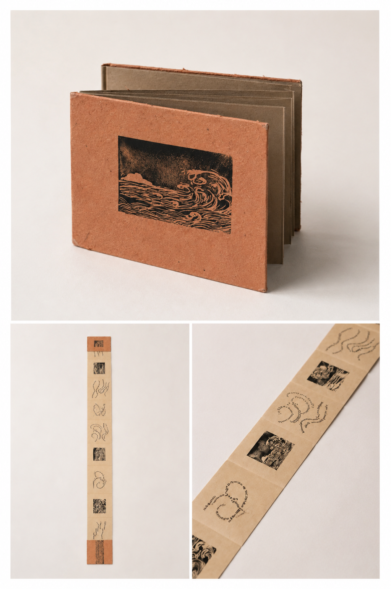

Early Work / 2017
Folded Poem Study
An early printed matter study exploring poetry as a continuous reading structure through folding, hand printing, and wave-like image sequences.

Early Work / 2017
An early printed matter study exploring poetry as a continuous reading structure through folding, hand printing, and wave-like image sequences.
